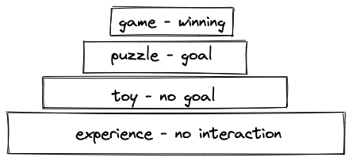
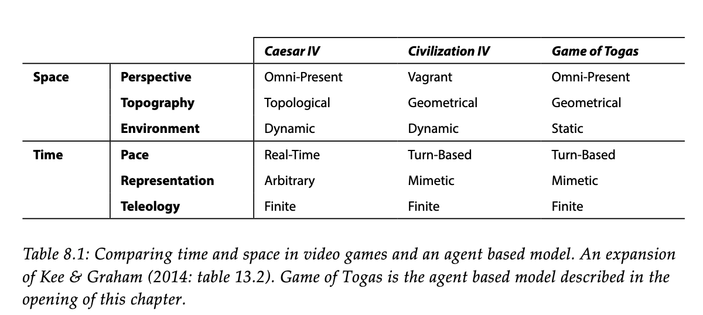

<!DOCTYPE html>
<html lang="en">
  <head>
    <meta charset="utf-8" />
    <meta name="viewport" content="width=device-width, initial-scale=1.0, maximum-scale=1.0, user-scalable=no" />

    <title></title>
    <link rel="stylesheet" href="dist/reveal.css" />
    <link rel="stylesheet" href="dist/theme/night.css" id="theme" />
    <link rel="stylesheet" href="plugin/highlight/zenburn.css" />
	<link rel="stylesheet" href="css/layout.css" />
	<link rel="stylesheet" href="plugin/customcontrols/style.css">


    <script defer src="dist/fontawesome/all.min.js"></script>

	<script type="text/javascript">
		var forgetPop = true;
		function onPopState(event) {
			if(forgetPop){
				forgetPop = false;
			} else {
				parent.postMessage(event.target.location.href, "app://obsidian.md");
			}
        }
		window.onpopstate = onPopState;
		window.onmessage = event => {
			if(event.data == "reload"){
				window.document.location.reload();
			}
			forgetPop = true;
		}

		function fitElements(){
			const itemsToFit = document.getElementsByClassName('fitText');
			for (const item in itemsToFit) {
				if (Object.hasOwnProperty.call(itemsToFit, item)) {
					var element = itemsToFit[item];
					fitElement(element,1, 1000);
					element.classList.remove('fitText');
				}
			}
		}

		function fitElement(element, start, end){

			let size = (end + start) / 2;
			element.style.fontSize = `${size}px`;

			if(Math.abs(start - end) < 1){
				while(element.scrollHeight > element.offsetHeight){
					size--;
					element.style.fontSize = `${size}px`;
				}
				return;
			}

			if(element.scrollHeight > element.offsetHeight){
				fitElement(element, start, size);
			} else {
				fitElement(element, size, end);
			}		
		}


		document.onreadystatechange = () => {
			fitElements();
			if (document.readyState === 'complete') {
				if (window.location.href.indexOf("?export") != -1){
					parent.postMessage(event.target.location.href, "app://obsidian.md");
				}
				if (window.location.href.indexOf("print-pdf") != -1){
					let stateCheck = setInterval(() => {
						clearInterval(stateCheck);
						window.print();
					}, 250);
				}
			}
	};


        </script>
  </head>
  <body>
    <div class="reveal">
      <div class="slides"><section  data-markdown><script type="text/template">

<!-- .slide: data-background-opacity="0.5" data-background-image="https://hist3812.netlify.app/images/illustrations/old-school-game-controller-vector.svg" -->

<div align="right">

#### Storytelling in Games

### Playful Engagement With The Past
#### HIST 3812
Sept 12 w/ Dr. Graham

</div>
</script></section><section  data-markdown><script type="text/template">
Let's play some...

<p style="line-height: 0" class="reset-paragraph image-paragraph"></img></p>


<aside class="notes"><p>what does this game teach? how to play the game! maybe that&#39;s the only thing that games teach....? But... is there a story?</p>
<p>think about the <em>what</em> of the narrative - the story - versus the <em>how</em> of the story - the discourse</p>
<p>this is handy, bit weird though <a href="https://link.springer.com/chapter/10.1007/978-3-319-46152-6_19">https://link.springer.com/chapter/10.1007/978-3-319-46152-6_19</a></p>
<p><a href="https://i.4pcdn.org/tg/1506997968929.pdf">https://i.4pcdn.org/tg/1506997968929.pdf</a></p>
</aside></script></section><section  data-markdown><script type="text/template">
Last week ...
</script></section><section  data-markdown><script type="text/template">...
- &shy;<!-- .element: class="fragment" data-fragment-index="1" -->we talked about the relationship between movement and 'reading' space in a museum, historic site
- &shy;<!-- .element: class="fragment" data-fragment-index="2" -->following Copplestone & Dunne, we saw different narritive structures and how these are realized in physical & digital spaces
- &shy;<!-- .element: class="fragment" data-fragment-index="3" -->change in media form (or built space) does not necessarily mean narrative structures change
- &shy;<!-- .element: class="fragment" data-fragment-index="4" -->I say, design for enchantment!
</script></section><section  data-markdown><script type="text/template">Last day ....

Dany Guay Belanger

<aside class="notes"><p>some kind of exercise to consolidate what dany talked about - his philosophy that games represent articulations, assemblages; &#39;agencement&#39; in original french, which implies a &#39;coming together&#39;. Thus, games can be more than the mere mechanic in view.</p>
</aside></script></section><section  data-markdown><script type="text/template">
...
- &shy;<!-- .element: class="fragment" data-fragment-index="1" -->things you observed from the readings?
- &shy;<!-- .element: class="fragment" data-fragment-index="2" -->things that need more unpacking?
- &shy;<!-- .element: class="fragment" data-fragment-index="3" -->connections with Belanger's thought?
</script></section><section  data-markdown><script type="text/template">
Queers in Love at the End of the World https://w.itch.io/end-of-the-world

- how does this piece generate a story
- how is this piece like a game
 
<iframe src="https://w.itch.io/end-of-the-world" width = 120% height= 500px></iframe>
</script></section><section  data-markdown><script type="text/template">
How did that game make you feel?
</script></section><section  data-markdown><script type="text/template">
How did that game change the protagonist?
</script></section><section  data-markdown><script type="text/template">
<p style="line-height: 0" class="reset-paragraph image-paragraph"></img></p>


[mata juegos](https://matajuegos.itch.io/atuel)
</script></section><section  data-markdown><script type="text/template">
[itch.io](https://itch.io)

- find some browser-based games that have some kind of historical theme
- play 5 - 10 minutes' worth
	- pay attention to how the mechanics intersect with the story
	- think about how time & agency work
	- WARNING: try to avoid NSFW content
</script></section><section  data-markdown><script type="text/template">
- what kind of player does the game assume?
- how is the story structured?
- does the story matter?
- is this an ethical game, in the sense Miguel Sicart writes?
</script></section><section  data-markdown><script type="text/template">
You'd think 'storytelling in games' would be straightforward.

It's not.

And it depends on how you look at 'games'.

And it depends probably on your theory of learning.
</script></section><section  data-markdown><script type="text/template">
Chris Crawford on play

<p style="line-height: 0" class="reset-paragraph image-paragraph"></img></p>


<aside class="notes"><p>in this scheme - games are rule based systems where the goal is for one player to win. mechanics can be the same as puzzles. replay value high
puzzles - rule based systems, but goal is a solution; little replay value
toys - manipulable like puzzles, but no fixed goal
experience - here crawford means &#39;stories&#39;, but can&#39;t be changed or manipulated by the player</p>
</aside></script></section><section  data-markdown><script type="text/template">
Do we study video games as games?

- this would mean we look at their rules
- we would look at how their rules interact 
	- and also keep an eye out for emergent effects
</script></section><section  data-markdown><script type="text/template">
When we talk about games, we don't say "Link ran up the side of the mountain".

We say, "I".

We tell a story.

Do we study video games as stories?
</script></section><section  data-markdown><script type="text/template">
Ludology versus Narratology, the most boring debate in the world.

Games are Systems. But People are People.

<aside class="notes"><p>and the &#39;story&#39; of a game might not be the same as what its creators say it is.</p>
</aside></script></section><section  data-markdown><script type="text/template">
Mechanics - Dynamics - Aesthetics 

<p style="line-height: 0" class="reset-paragraph image-paragraph"></img></p>


(yup, this is the graphic you'll find on the [Wikipedia page](https://en.wikipedia.org/wiki/MDA_framework))

<aside class="notes"><p>2004, Robin Hunicke, Marc LeBlanc, Robert Zubek. Problems with this perspective?</p>
</aside></script></section><section  data-markdown><script type="text/template">
<p style="line-height: 0" class="reset-paragraph image-paragraph"></img></p>

</script></section><section  data-markdown><script type="text/template">
Time in games
<p style="line-height: 0" class="reset-paragraph image-paragraph"></img></p>


source: me

<aside class="notes"><p>thinking about how space is depicted might tell us something about the possible story?</p>
</aside></script></section><section  data-markdown><script type="text/template">
Consolidate. What Have We Learned?

What is a game?
What kinds of frameworks can we use to understand them?
</script></section><section  data-markdown><script type="text/template">


</script></section></div>
    </div>

    <script src="dist/reveal.js"></script>

    <script src="plugin/markdown/markdown.js"></script>
    <script src="plugin/highlight/highlight.js"></script>
    <script src="plugin/zoom/zoom.js"></script>
    <script src="plugin/notes/notes.js"></script>
    <script src="plugin/math/math.js"></script>
	<script src="plugin/mermaid/mermaid.js"></script>
	<script src="plugin/chart/chart.min.js"></script>
	<script src="plugin/chart/plugin.js"></script>
	<script src="plugin/menu/menu.js"></script>
	<script src="plugin/customcontrols/plugin.js"></script>

    <script>
      function extend() {
        var target = {};
        for (var i = 0; i < arguments.length; i++) {
          var source = arguments[i];
          for (var key in source) {
            if (source.hasOwnProperty(key)) {
              target[key] = source[key];
            }
          }
        }
        return target;
      }

	  function isLight(color) {
		let hex = color.replace('#', '');

		// convert #fff => #ffffff
		if(hex.length == 3){
			hex = `${hex[0]}${hex[0]}${hex[1]}${hex[1]}${hex[2]}${hex[2]}`;
		}

		const c_r = parseInt(hex.substr(0, 2), 16);
		const c_g = parseInt(hex.substr(2, 2), 16);
		const c_b = parseInt(hex.substr(4, 2), 16);
		const brightness = ((c_r * 299) + (c_g * 587) + (c_b * 114)) / 1000;
		return brightness > 155;
	}

	var bgColor = getComputedStyle(document.documentElement).getPropertyValue('--r-background-color').trim();

	if(isLight(bgColor)){
		document.body.classList.add('has-light-background');
	} else {
		document.body.classList.add('has-dark-background');
	}

      // default options to init reveal.js
      var defaultOptions = {
        controls: true,
        progress: true,
        history: true,
        center: true,
        transition: 'default', // none/fade/slide/convex/concave/zoom
        plugins: [
          RevealMarkdown,
          RevealHighlight,
          RevealZoom,
          RevealNotes,
          RevealMath.MathJax3,
		  RevealMermaid,
		  RevealChart,
		  RevealCustomControls,
		  RevealMenu,
        ],

		mathjax3: {
			mathjax: 'plugin/math/mathjax/tex-mml-chtml.js',
		},

		customcontrols: {
			controls: [
				{id: 'toggle-overview',
				title: 'Toggle overview (O)',
				icon: '<i class="fa fa-th"></i>',
				action: 'Reveal.toggleOverview();'
				},
			]
		},
		menu: {
			loadIcons: false
		}
      };

      // options from URL query string
      var queryOptions = Reveal().getQueryHash() || {};

      var options = extend(defaultOptions, {"width":960,"height":700,"margin":0.04,"controls":true,"progress":true,"slideNumber":true,"transition":"slide","transitionSpeed":"default"}, queryOptions);
    </script>

    <script>
      Reveal.initialize(options);
    </script>
  </body>
</html>
